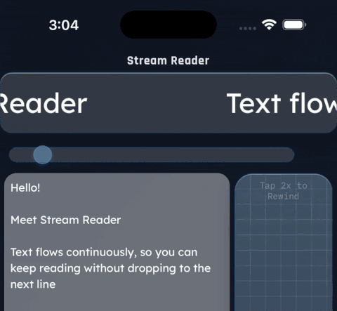
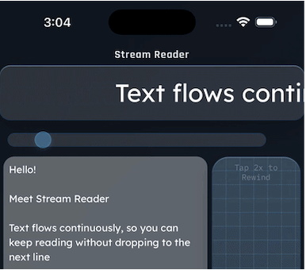
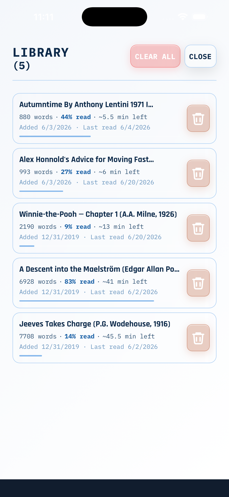
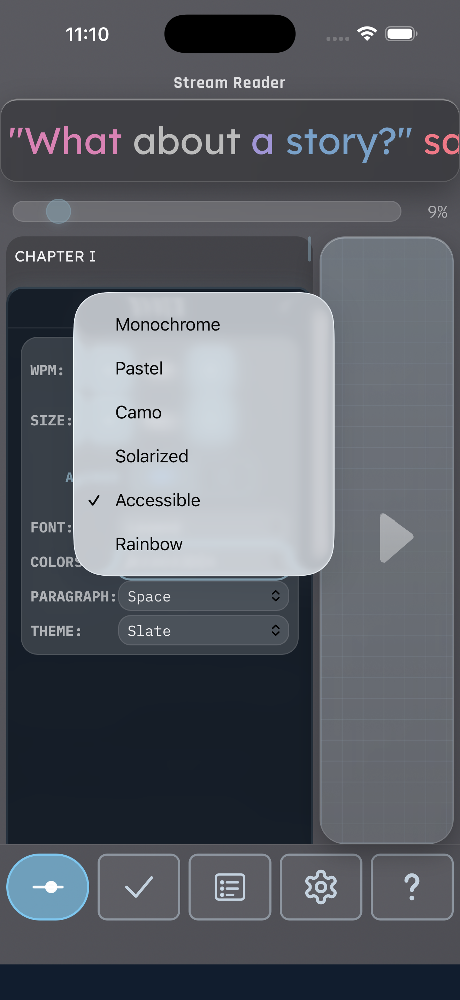

Stream Reader
One line. Your pace. Nothing in the way.
A simple reader that moves text past you one line at a time, at a speed you set — so it's easier to stay with the words.
What it does


Instead of a full page to scan, Stream Reader gives you one line at a time, gliding by at a pace you choose.
With less on screen, it's easier to keep your place, stay with the sentence, and read without backtracking.
Speed up when you're in a rhythm, slow down when you want to savor — you're always in control.
And because it works on plain text, Stream Reader handles all major world writing systems — from Latin, Cyrillic, and Greek to Arabic, Hebrew, Chinese, Japanese, and Korean.
Made to fit how you read

Save and resume
Keep a library of what you're reading and return to the exact spot you left off.

Make it yours
Adjust font, size, and speed, and turn on optional word coloring — whatever helps you focus.
Who it's for
Stream Reader is for anyone who wants a calmer, more efficient way to read. Some people use it because a full page feels noisy or they lose their place. Others just like focusing on a single line of text at a pace they set — on a commute, between tasks, or any time it beats holding a whole page in view.
Whether you're after more focus or simply a more convenient way to read, we made it with you in mind.